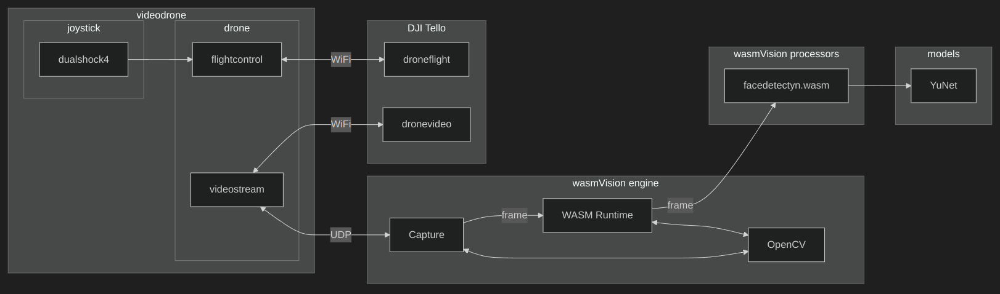

Seeing Eye To Eye:
Computer Vision Using WebAssembly
FOSDEM 2025
Ron Evans - @deadprogram
Ron Evans (@deadprogram)
Technologist For Hire
hybridgroup.com
Software that makes
your hardware work
Open Source Projects
tinygo.org

GoCV.io
So how about computer vision using WebAssembly?
A lot of computer vision applications have the same basic structure
But lots of moving parts to integrate
And hard to install on many different machines
Until now...
wasmvision.com
Get going with computer vision
Capture video
Process it
Save or stream it
wasmvision architecture
wasmVision engine
Written in Go
(uses CGo)
Single, statically linked binary
OpenCV
FFmpeg
GStreamer
GoCV
Wazero
wazero.com
wasmvision Processors
Can be written using Go (TinyGo)
Rust
C
wasmCV
wasmcv.org
wasm interfaces for computer vision
Using wit (wasm interface type)
Part of the wasm component model
HOWEVER
Not actually using the wasm component model
How Computer Vision Works

Mat
RGB Mat
How OpenCV/GoCV Works
mat.wit file
See the code
Everything is generated from the .wit files
wasmCV Docs
See the code
Go client interface wrappers
wit-bindgen-go
go.bytecodealliance.org
go get wasmcv.org/wasm/cv
Blur processor (Go)
See the code
Rust/C client interface wrappers
wit-bindgen
github.com/bytecodealliance/wit-bindgen
cargo add wasmcv
Blur processor (Rust)
See the code
cp /usr/local/include/wasmcv.h .
Blur processor (C)
See the code
Processors for things like
Blurring images
Detecting faces
Detecting and blurring faces
'wasmvision' command
A quick tour of a few processors
asciify processor (Go)
See the code
mosaic processor (Go)
See the code

ollama
ollama processor (Go)
See the code
Videodrone
Flight control station with face tracking
using machine learning model
DJI Tello drone
Dualshock 4 joystick
Gobot
YuNet Face Detection Model
How Computer Vision Models Work
